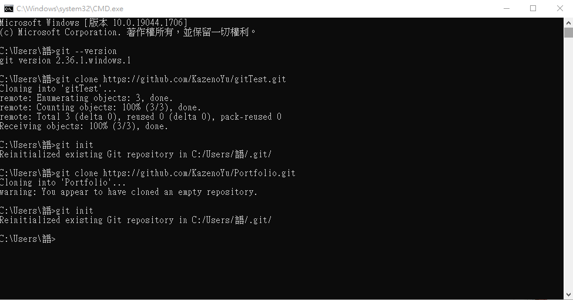
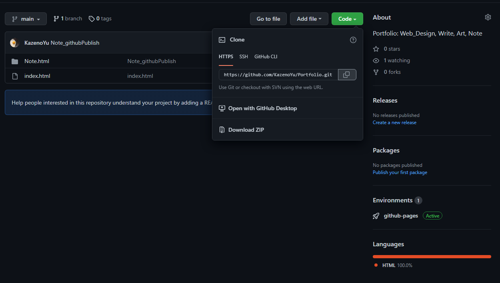
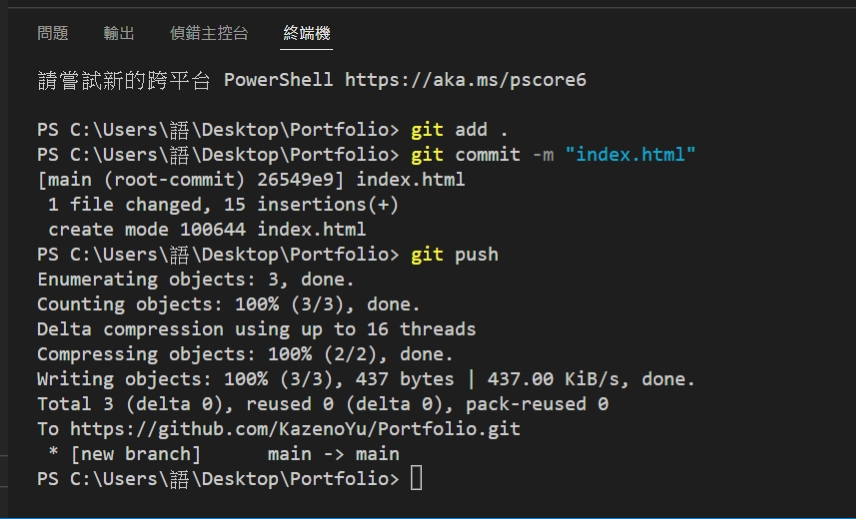
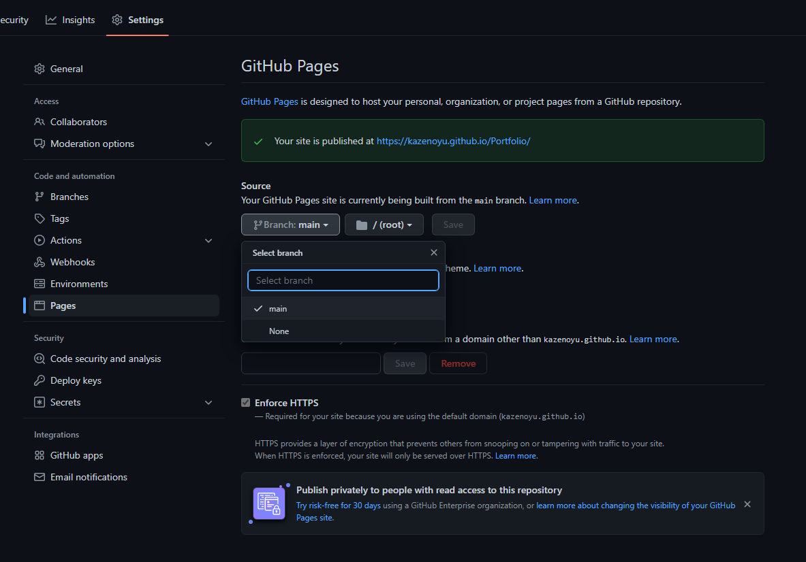

1.Git 安裝
2.CMD 設置
- (1) git --version
- (2) git clone
- (3) Clone一個版控資料夾來建立專案
- (4) git init
- (5) 在資料夾裡裝git版控檔案 
Clone github網址

3.Vscode終端機操作
- (1) git add .
- (2) git commit -m "版本變更之敘述"
- (3) git push 
4.github branch
